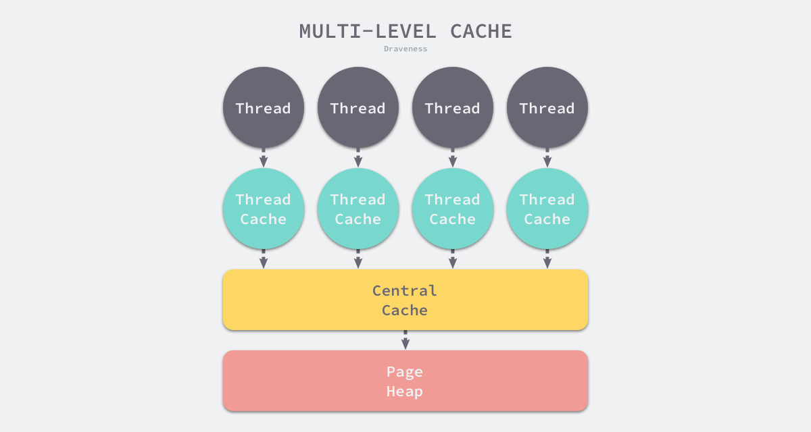

内存分配器
代码，参数，返回值等内容一般都会是分配在stack上，这部分的内容是由编译器来进行管理的，还有一部分的内容是分配到heap上的，这部分内容的管理就是由内存分配器来管理的。
内存分配器拥有三个组件
- 用户程序
- 分配器
- 收集器
他们的活动空间就是heap
分配器用两种形式，分别是线性分配器和空闲链表分配器
线性分配器：
在内存中，在内存中维护一个指向内存特殊位置的指针，当向分配器索要内存的时候，指针就会线性依次查询剩余的内存，返回所需的内存区域，修改指针在内存中的位置，线性分配器优点很突出，就是实现简单，速度高效，但是缺点是无法利用已经释放的内存。可以看到线性分配器是无法利用已经空闲的内存的，所以说，这块内存地址应该被回收掉，进行重新分配，那么它就需要跟gc算法进行结合，所以c和c++这种没有gc的，直接暴露指针的编程语言无法使用线性分配器
空闲链表分配器：
这种分配器可以利用已经空闲的内存，它维护来一个由内存快组成的链表，只要申请内存就会查询空闲内存，找到足够大的内存块儿的时候就会分配给用户，并且重新修改链表，空闲链表分配器拥有以下查找策略：
从头开始，选择第一个符合条件的内存块儿
循环查找，从上次查找的地方开始查找首个符合条件的内存块
从头开始遍历一遍，找到一个最优解
将内存分为多个链表，各个链表拥有的内存块总量大小相同，但是内部的内存块组合不一样【但是各个链表内部单位内存大小相同】，先查找满足条件的链表，再具体查找合适的内存块
举个例子：现在有三个链表a，b，c，大小都是10kb，a的组合是
2，2，2，2，2，b是5，5，c是1,1,1,1,1,1,1,1,1,1,我们需要一个大小为2的内存块，那么我们就可以遍历三个链表的参数【参数显示起拥有的内存块的大小】我们就可以发现a是合适的，所以我们就找到a，然后在a里查找到大小为2的内存区域，返回数据即可。
线程缓存分配 thread-caching malloc --- TCMalloc
使用多级缓存，将对象根据大小分类，并按照不同的类别实施不同的分配策略。
运行时会根据需求的对象大小，将对象分为：
- 微对象: [0,16b)
- 小对象: [16b,32kb]
- 大对象: (32kb,+∞)
其中，go语言中处理的对象大小，绝大多数都是处于32kb以下，所以说才要对于小对象和大对象进行分开处理机制。
go运行时将堆内存分配器分为三个级别的缓存机制：

- thread cache ：线程缓存
- central cache：中心缓存
- page heap：页堆
每一个线程都有一个独立的不需要锁的线程缓存，小的对象分配只需要在这个缓存内申请内存空间即可
当在tread cache中不足以满足空间要求时，就会从中心缓存中申请内存，如果申请的内存过大，比如超过32kb，那么就会从page heap中申请内存空间。
堆区的稀疏内存
go在1.11之前使用的是堆区线性内存管理模式，跟c语言配合的时候，就会出现内存地址冲突这种重大bugs。
在1.11后，go引入了稀疏内存，堆区的内存变得不再连续，而且也去掉了堆区256gb的内存大小的限制，现在的大小限制是256tb
地址空间
因为所有的内存地址，最终都是要从操作系统去申请的，所以go的运行时就构建了，操作系统的内存管理抽象层，将运行时管理的内存空间的地址状态分为了：
- none ： 内存没有被保留或者映射，是地址空间的默认状态
- reserved：运行时持有该地址空间，但是访问该内存会导致错误
- prepared：内存被保留，可以快速转换到 Ready 状态
- ready：可以被安全访问
内存管理组件
- 内存管理单元:
runtime.mspan - 线程缓存:
runtime.mcache - 中心缓存:
runtime.mcentral - 页堆:
runtime.mheap
 从上图可以清晰的看出来我们上文中介绍的两个结构，第一个就是go使用的多级线程缓存机制，第二我们可以看出来，在页堆这个区域的时候，我们对于内存的控制，正如上文说的那样，是稀疏管理的
从上图可以清晰的看出来我们上文中介绍的两个结构，第一个就是go使用的多级线程缓存机制，第二我们可以看出来，在页堆这个区域的时候，我们对于内存的控制，正如上文说的那样，是稀疏管理的